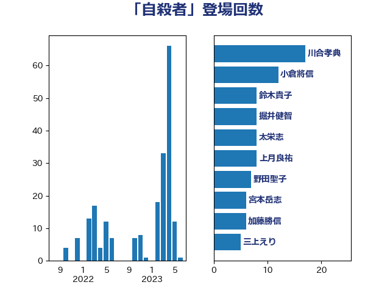

単語「自殺者」

| 山井和則 | 立憲民主党 | 16 回 |
| 菅義偉 | 自由民主党 | 16 回 |
| 萩生田光一 | 自由民主党 | 11 回 |
| 打越さく良 | 立憲民主党 | 8 回 |
| 東徹 | 日本維新の会 | 8 回 |
| 石井苗子 | 日本維新の会 | 8 回 |
| 川田龍平 | 立憲民主党 | 7 回 |
| 野田聖子 | 自由民主党 | 7 回 |
| 古屋範子 | 公明党 | 6 回 |
| 田村憲久 | 自由民主党 | 6 回 |
| 三原じゅん子 | 自由民主党 | 5 回 |
| 佐々木さやか | 公明党 | 5 回 |
| 坂本哲志 | 自由民主党 | 5 回 |
| 古賀友一郎 | 自由民主党 | 4 回 |
| 吉田とも代 | 日本維新の会 | 4 回 |
| 塩村あやか | 立憲民主党 | 4 回 |
| 掘井健智 | 日本維新の会 | 4 回 |
| 竹内真二 | 公明党 | 4 回 |
| 鈴木貴子 | 自由民主党 | 4 回 |
| 伊藤孝恵 | 国民民主党 | 3 回 |
| 吉田忠智 | 立憲民主党 | 3 回 |
| 城井崇 | 立憲民主党 | 3 回 |
| 山添拓 | 日本共産党 | 3 回 |
| 岡本三成 | 公明党 | 3 回 |
| 川合孝典 | 国民民主党 | 3 回 |
| 梅村みずほ | 日本維新の会 | 3 回 |
| 橋本聖子 | 無所属 | 3 回 |
| 浜田聡 | NHK党 | 3 回 |
| 谷合正明 | 公明党 | 3 回 |
| 鰐淵洋子 | 公明党 | 3 回 |
| 上月良祐 | 自由民主党 | 2 回 |
| 世耕弘成 | 自由民主党 | 2 回 |
| 中谷真一 | 自由民主党 | 2 回 |
| 勝部賢志 | 立憲民主党 | 2 回 |
| 小沢雅仁 | 立憲民主党 | 2 回 |
| 山口那津男 | 公明党 | 2 回 |
| 山本博司 | 公明党 | 2 回 |
| 岩渕友 | 日本共産党 | 2 回 |
| 平木大作 | 公明党 | 2 回 |
| 平沢勝栄 | 自由民主党 | 2 回 |
| 後藤茂之 | 自由民主党 | 2 回 |
| 横沢高徳 | 立憲民主党 | 2 回 |
| 水岡俊一 | 立憲民主党 | 2 回 |
| 泉健太 | 立憲民主党 | 2 回 |
| 深澤陽一 | 自由民主党 | 2 回 |
| 牧原秀樹 | 自由民主党 | 2 回 |
| 石井啓一 | 公明党 | 2 回 |
| 舩後靖彦 | れいわ新選組 | 2 回 |
| 辻元清美 | 立憲民主党 | 2 回 |
| 長友慎治 | 国民民主党 | 2 回 |
| 長妻昭 | 立憲民主党 | 2 回 |
| 高野光二郎 | 自由民主党 | 2 回 |
| 中川宏昌 | 公明党 | 1 回 |
| 丹羽秀樹 | 自由民主党 | 1 回 |
| 伊藤岳 | 日本共産党 | 1 回 |
| 嘉田由紀子 | 無所属 | 1 回 |
| 大石あきこ | れいわ新選組 | 1 回 |
| 安江伸夫 | 公明党 | 1 回 |
| 寺田学 | 立憲民主党 | 1 回 |
| 小林茂樹 | 自由民主党 | 1 回 |
| 山田勝彦 | 立憲民主党 | 1 回 |
| 山田太郎 | 自由民主党 | 1 回 |
| 岬麻紀 | 日本維新の会 | 1 回 |
| 岸信夫 | 自由民主党 | 1 回 |
| 斉藤鉄夫 | 公明党 | 1 回 |
| 杉久武 | 公明党 | 1 回 |
| 杉田水脈 | 自由民主党 | 1 回 |
| 柚木道義 | 立憲民主党 | 1 回 |
| 森まさこ | 自由民主党 | 1 回 |
| 森田俊和 | 立憲民主党 | 1 回 |
| 武田良太 | 自由民主党 | 1 回 |
| 浅野哲 | 国民民主党 | 1 回 |
| 渡辺猛之 | 自由民主党 | 1 回 |
| 片山さつき | 自由民主党 | 1 回 |
| 玉木雄一郎 | 国民民主党 | 1 回 |
| 田嶋要 | 立憲民主党 | 1 回 |
| 田村まみ | 国民民主党 | 1 回 |
| 田村智子 | 日本共産党 | 1 回 |
| 石井章 | 日本維新の会 | 1 回 |
| 石橋通宏 | 立憲民主党 | 1 回 |
| 磯崎仁彦 | 自由民主党 | 1 回 |
| 福山哲郎 | 立憲民主党 | 1 回 |
| 竹内譲 | 公明党 | 1 回 |
| 芳賀道也 | 国民民主党 | 1 回 |
| 西岡秀子 | 国民民主党 | 1 回 |
| 西村康稔 | 自由民主党 | 1 回 |
| 鈴木俊一 | 自由民主党 | 1 回 |
| 鈴木宗男 | 日本維新の会 | 1 回 |
| 階猛 | 立憲民主党 | 1 回 |
| 青山大人 | 立憲民主党 | 1 回 |
| 音喜多駿 | 日本維新の会 | 1 回 |
| 高木かおり | 日本維新の会 | 1 回 |